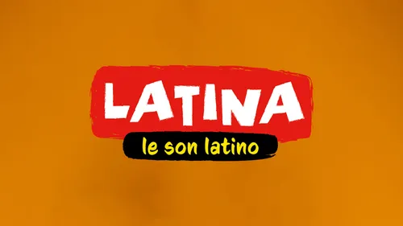
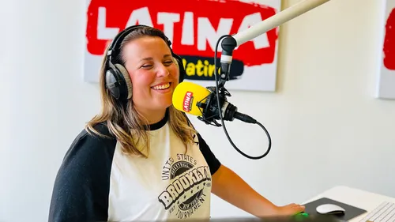
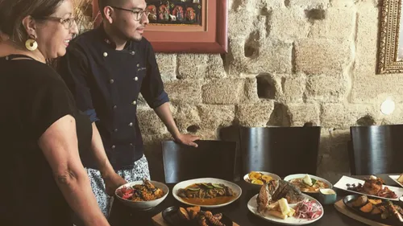

Radio
Retrouver un titre
Fréquences
Les émissions
Latina en dab+
Actu
Artistes
Ça Buzze
Événements
Les Dernières Sorties
Mundo Latino
Premium News
Podcasts
Élo Les Bons Tuyaux
La Pause Latina
Jeux
À gagner sur Latina
Règlements des jeux
Régie Pub
Contact
Administratif
Antenne
Promotion
Rédaction
Régie publicitaire
Service technique
Retrouver un titre
Voir plus
Nos webradios
À l'antenne

6h00 - 8h00
Le Son Latino
8h00 - 10h00
Ludo
10h00 - 12h00
Gostoso
12h00 - 14h00
Marie
14h00 - 17h00
Domingos Salseros
17h00 - 20h00
Mario

20h00 - 0h00
La Noche Latina | Week-end
Premium News
Voir plus

El Picaflor, Piscobar… Un voyage gustatif au Pérou en plein Paris
Mamacita Sound : deux jours de festival latino à Paris !
Événement emploi – formation : participez aux PORTES OUVERTES de...
Les impressions soniques et l'expérience de jeu à Casinozer : une...
DAB+
Écouter Latina en DAB+, c’est la garantie d’un son parfait !